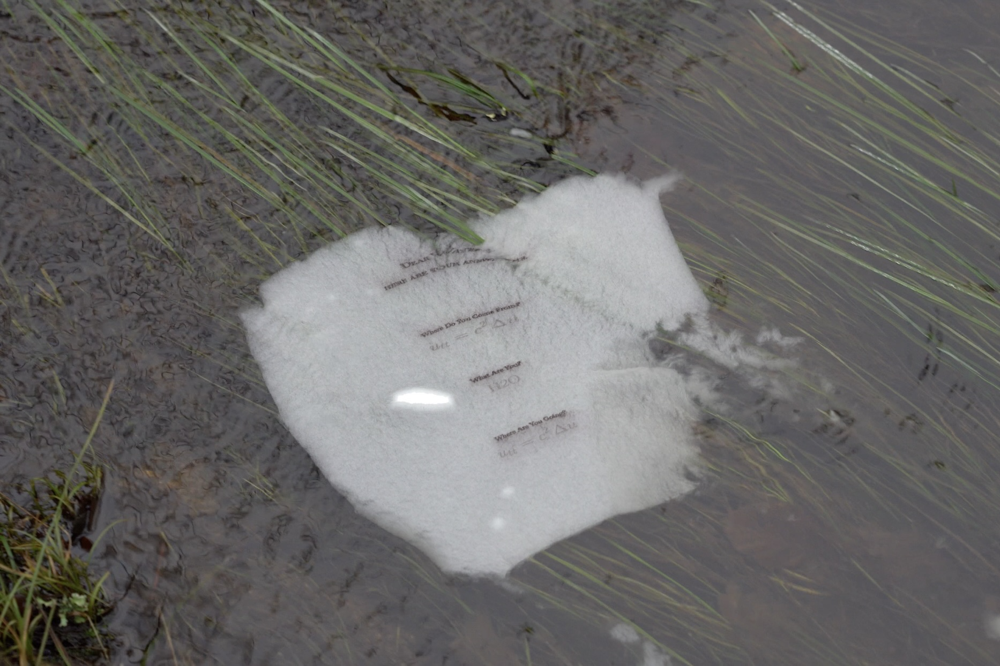

Cara Acqua,
Stampa a bio-inchiostro su carta idrosolubile
Jiaqi Liu
Cara Acqua, accosta risposte scientifiche a tre domande filosofiche sulla natura dell'acqua, attingendo alle tradizioni socratica, platonica e cartesiana. L'equazione delle onde (risposte 1 e 3) descrive come le onde d'acqua si muovano nello spazio e nel tempo, mentre H2O (risposta 2) coglie la struttura molecolare dell'acqua stessa. Realizzata con materiali completamente biodegradabili, la stampa non arrecherà alcun danno all'acqua né alle forme di vita che essa ospita.